2025年9月
广播发布后不可编辑，所以每条都是那一刻的原话。
2025-09-30 12:16:16
在看 胆大党 第二季 / ダンダダン 第2期 ★★★★☆
作画依旧很顶，ed的环绕镜头好有创意。只是剧情未有亮点了。
2025-09-29 23:04:58
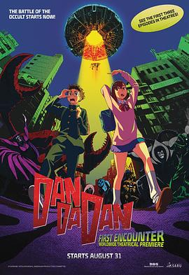
第一季前三集。配乐比较动听。
2025-09-29 23:03:24
 看过 小城日常 / CITY THE ANIMATION ★★★★★
看过 小城日常 / CITY THE ANIMATION ★★★★★
又是熟悉的京阿尼的日常演出。这次还会是叫好不叫座么。第一集笑点不多，单单为了介绍CITY。第二集上古兵器友情客串，开心。（2025, 8, 5，第五集的九个分镜好牛。传统的清明上河图又回来啦。特摄风的双子塔搭景，现在的动画不能只是画了，都开始创新了。最后原来这个还是个典故啊。）（2025, 8.11，少女面罩下的哭脸是令人动容的。）（2025, 9, 1，长镜头太炫了，很厉害。）（2025, 9, 8，反复横跳的下次预告笑死人。少年终于放下了情结么。）（2025, 9, 22，重新认识就是为了告别时不会流泪么。）（2025, 9, 29，最后一集好多callback。使用歌队结尾反而使告别不落寞了呢。京阿尼谢谢你呀！）
2025-09-29 16:52:10
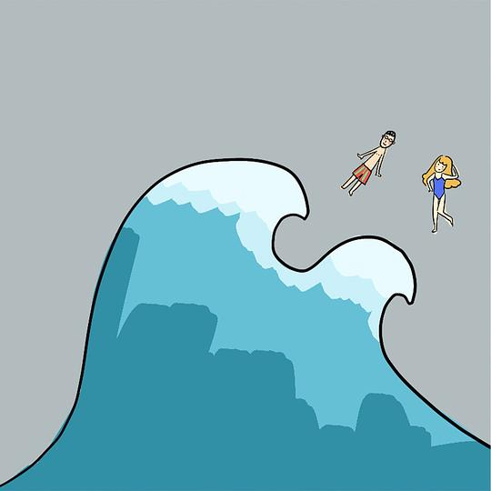
很chill的洛天依的嗓音，非常值得一听。
2025-09-29 16:50:20
看过 1921
台词有些喊口号化了，不接地气了。
2025-09-29 11:36:21
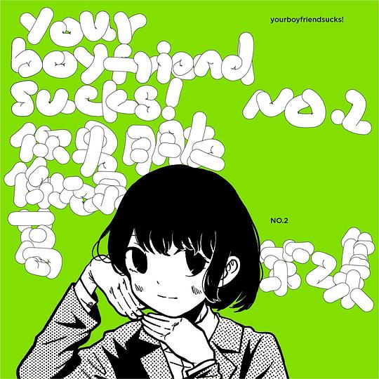
从第二首歌开始居然让闭眼的我回到了高中，而回去的我所做的第一件事就是主动离开加多宝，以防现在的我沉湎在过去。
2025-09-29 11:05:32
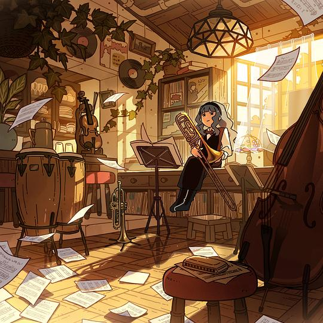
好一个改编，有层次，有创新。
2025-09-29 11:04:50
听过 Singing! (通常盤） ★★★★☆
《おはよう、またあした》里充满着好悲伤的味道。
2025-09-29 11:04:36
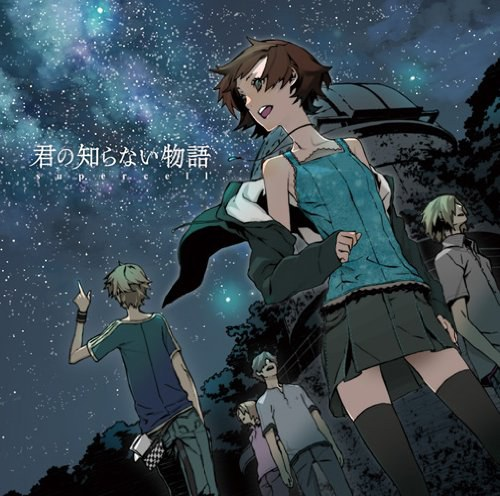
夜空里闪烁星海下的爱恋。
2025-09-29 11:02:45
在听 Singing! (通常盤） ★★★★☆
《おはよう、またあした》里充满着好悲伤的味道。
2025-09-28 16:09:03
想看 杰出公民 / El ciudadano ilustre
2025-09-28 15:19:35
看过 蜘蛛侠：英雄无归 / Spider-Man: No Way Home ★★★☆☆
最喜欢不过斯特兰奇博士的能力，小汤姆也是在太调皮了吧。“能力越大责任越大”说出来之后必死无疑么。三代同框实属难得之景，反派的重演亦是经典。托比cue了一下《超凡蜘蛛侠》的“amazing”，结果加菲没反应过来好好笑哦。加菲接住了MJ但还是没办法让格温回来的神情让我遗憾得揪心。英雄故事一定要这样草草率率么。
2025-09-28 11:56:56
 读过 病隙碎笔 ★★★★☆
读过 病隙碎笔 ★★★★☆
加多宝送我的小书，一直没机会读抑或读完。大概是生病的缘故，铁生对上帝的看法很浓重。到最后也没明白加多宝所说的“它”到底指涉的是什么。
2025-09-27 23:39:39
看过 知晓天空之蓝的人啊 / 空の青さを知る人よ ★★★☆☆
实在无法共情叛逆期的小孩姐了，好像我也变成了长成臭马脸的大人了呢。akane才是最辛苦的那个吧。最后的那句台词好惊人，天空真蓝啊。
2025-09-27 17:33:35
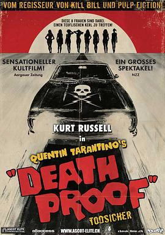
一个女强人的小爽片，但是节奏有些问题，也有很多穿帮。出现了很多经典元素，例如昆汀的客串、口哨曲的铃声、挡风玻璃下的大脏脚与后备箱视角。
2025-09-27 00:55:26
看过 神奇4侠：初露锋芒 / The Fantastic Four: First Steps ★★☆☆☆
典型的三段式结构，从介绍再到困难的出现后小小的内讧最后完美地解决问题都无一例外地典型。母亲的力量就这么可笑地放大了，没意思。
2025-09-26 15:28:09
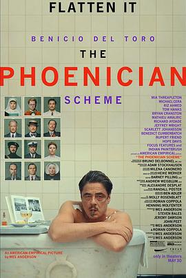
实际上比前一部观感好了太多了，剧情也比较有意思，只是想不明白包括上一部《小行星城》里为什么一定要母亲的角色处于缺位状态呢。卷福的造型好笑人。兄弟俩的打斗戏中居然出现了跟随镜头，真难得。
2025-09-26 08:54:13
看过 月亮残片 ★★☆☆☆
莫名其妙的吻戏。
2025-09-25 15:00:35
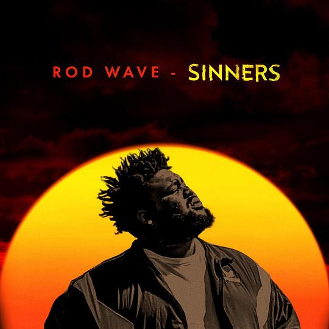
前奏进鼓的时机很掐人。
2025-09-24 22:00:08
收藏小组讨论到豆列 理解
1️⃣什么是戛纳场刊 电影节期间有一些媒体会每日发布实体刊物，更新每日市场交易新闻，这些刊物就是“场刊”，最有名的比如银幕场刊（Screen Daily）、好莱坞报道者、综艺（Variety）、法国的Le Film Francais等等。 戛纳作为A类世界排名第一的电影节，它不仅承担着评奖的职能，还是世界最大…
（豆瓣在这里截断了，全文不在档案里）
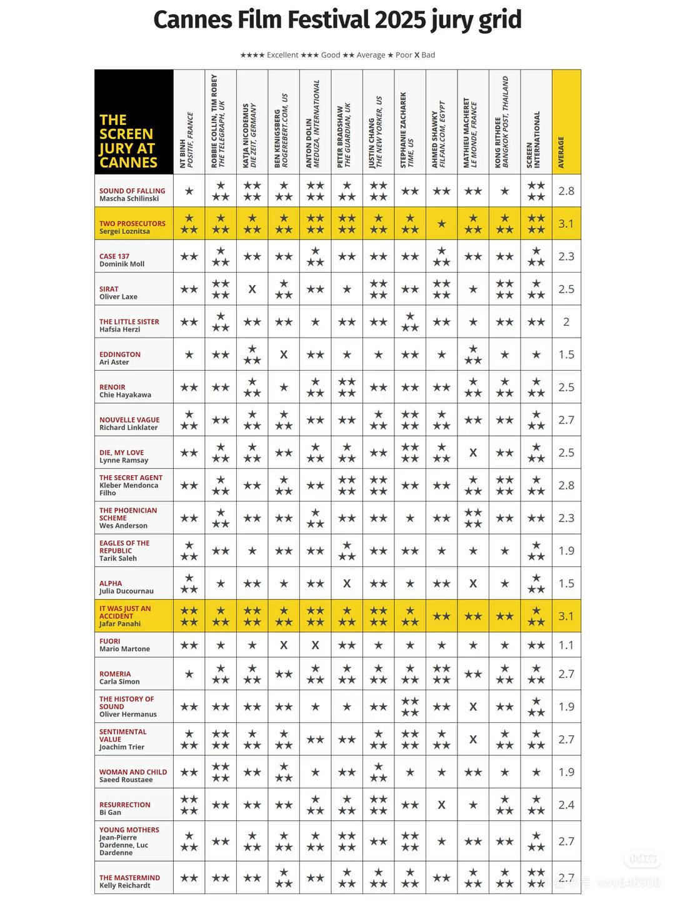 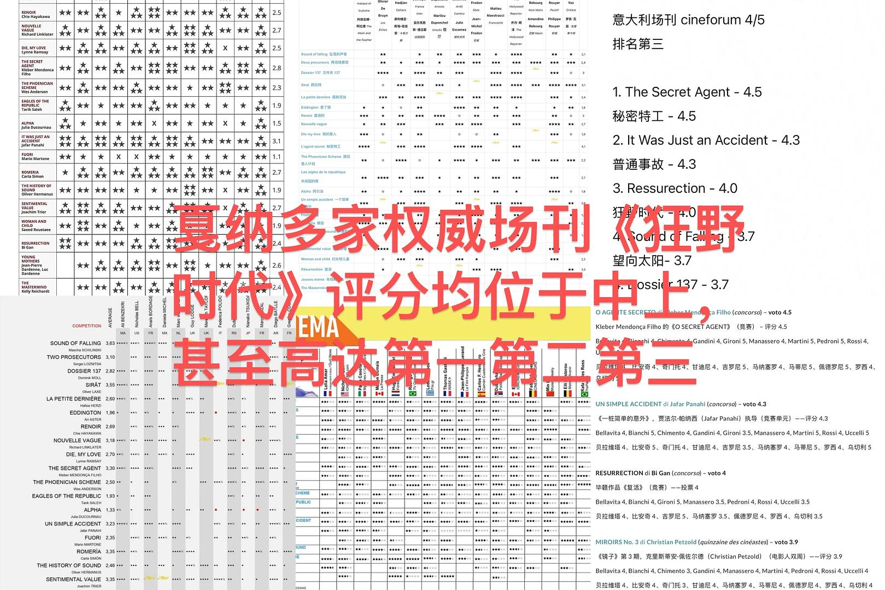 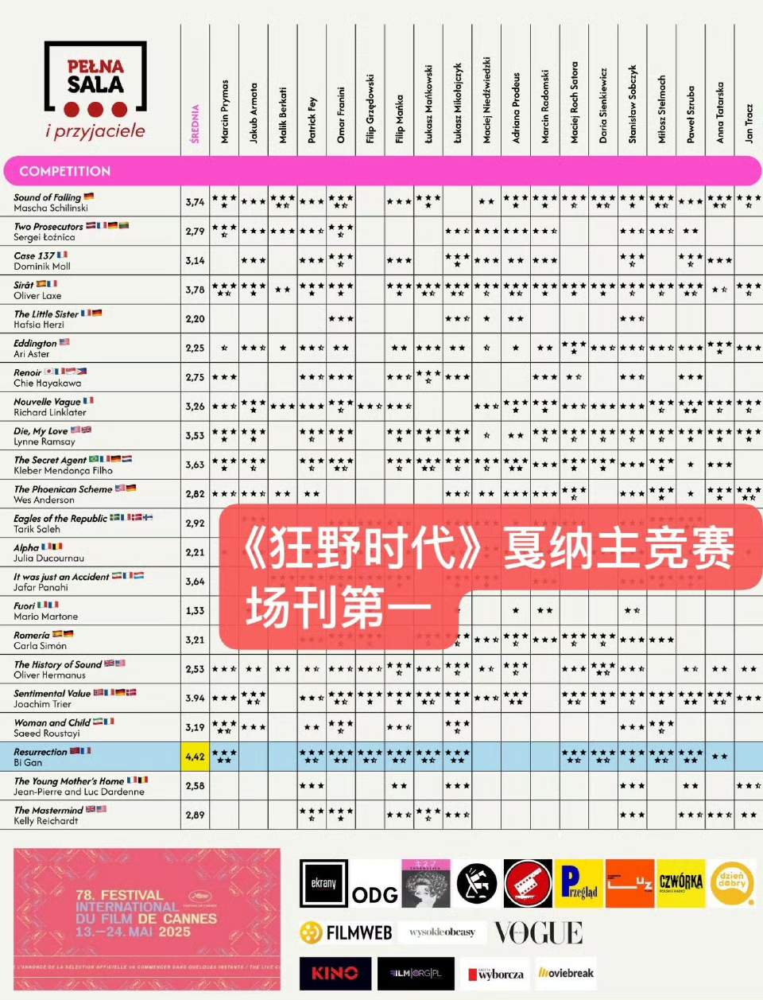 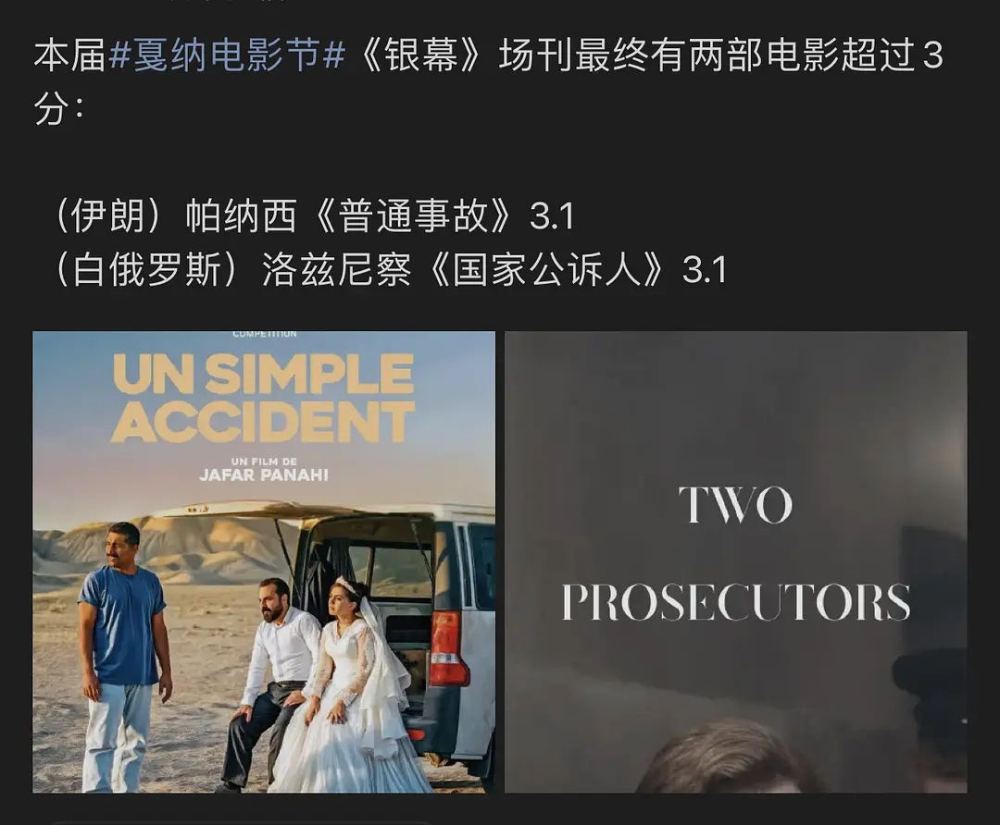 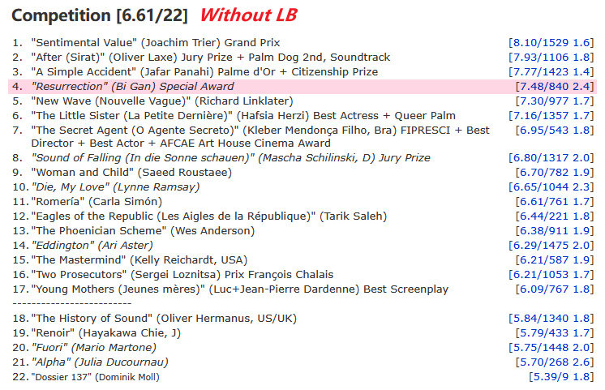 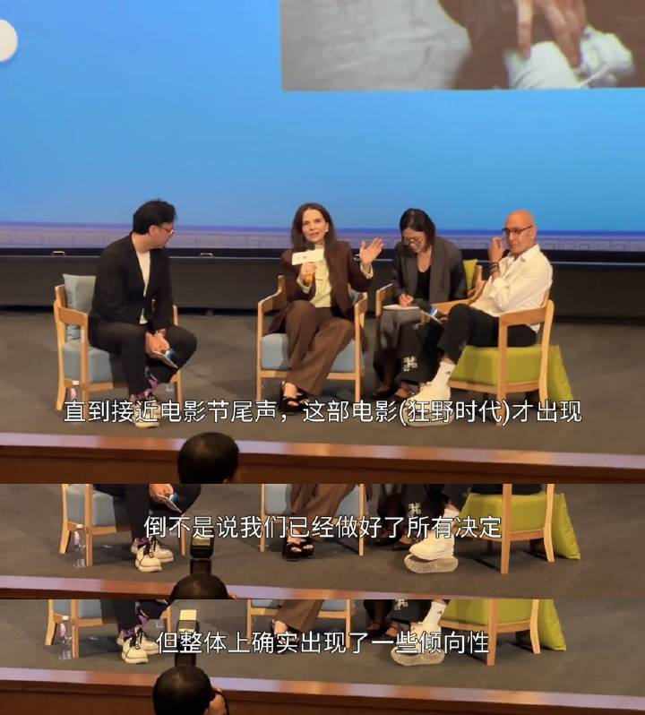


2025-09-23 23:07:20
 在读 横道世之介 ★★★★☆
在读 横道世之介 ★★★★☆
月份为章节，顺叙着世之介平凡又不凡的人生。我真是羡慕他的世界观呀，简简单单的。
2025-09-23 16:24:35
 听过 TVアニメ「ワンダーエッグ・プライオリティ」オリジナル・サウンドトラック Vol. 2 ★★★★☆
听过 TVアニメ「ワンダーエッグ・プライオリティ」オリジナル・サウンドトラック Vol. 2 ★★★★☆
喜欢第二十四《new world》，电子乐的鼓点真动听。
2025-09-23 16:24:32
 听过 TVアニメ「ワンダーエッグ・プライオリティ」オリジナル・サウンドトラック Vol. 1 ★★★★☆
听过 TVアニメ「ワンダーエッグ・プライオリティ」オリジナル・サウンドトラック Vol. 1 ★★★★☆
喜欢第十四《brand-new world》。
2025-09-23 16:24:04
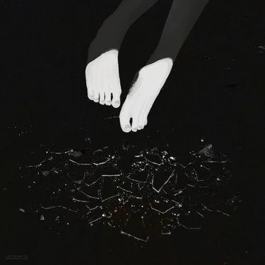
宇多田的声音一出场我就酥软了。
2025-09-23 15:29:28
 看过 更衣人偶坠入爱河 第二季 / その着せ替え人形は恋をする Season 2 ★★★★☆
看过 更衣人偶坠入爱河 第二季 / その着せ替え人形は恋をする Season 2 ★★★★☆
剧情比较硬核，只是作画非一般地顶，令我瞠目结舌。首集的摄影很强势，在新菜自我怀疑的那幕戏里，双马尾小妹的歌声由浅至深地渗入，很有点意思。vvns的ed真精致。（2025, 8, 5，第一十七集的真实的人偶演出真有趣。）（2025, 9, 17，第二十二集通过少女的脚趾扣住她自己的小心思的地方真是太可爱了。）（2025, 9, 23，可惜我JuJu大人的感情戏了。）
2025-09-23 14:56:50
看过 过春天 ★★★★☆
青春总是与犯罪纠缠不清呀，城市的喧嚣也更适合情绪的宣泄呀，雪糕筒踢起，生活又鸡飞狗跳了起来。画面很会捕捉氛围，海边街灯的光晕尤其好看。iPhone还蛮热门的呢。
2025-09-22 23:41:05
 读过 喬瑟與虎與魚群 ★★★★☆
读过 喬瑟與虎與魚群 ★★★★☆
有点像报刊上爱情小说的文风。喜欢《行李已打包好》这一篇。（2025, 9, 21，终于读到这篇被改变多次的文章了，但是主要人物很少，重点在乔瑟的身上和其与管理员的感情。）（2025, 9, 22，《马芬蛋糕》里的连大叔也太变态了吧。）
2025-09-22 23:06:59
看过 渺渺 ★★★★☆
摄影很有想法。求求女主能不能爱惜点CD，不要随便放在架子上好么。没想到是两对同性的故事，车上的“一个爱着我的人和我爱过的人”的形容好贴切。榕容姐这时候好嫩呀。《旅行的意义》放在最后真能烘托情绪，一部清新的失恋电影就这样诞生了。可我和主动删除声音的陈飞不同，我的什么也没留下是真的什么也没有。
2025-09-22 15:30:23
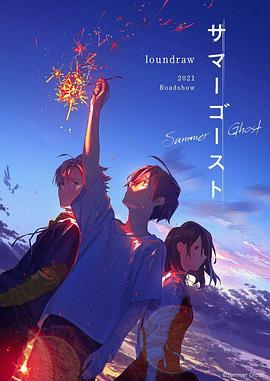
真是一部空有皮囊的作品，故事太单薄，设定也不合理，绚香的幽灵存在只因为尸体的执念，最后凉学长的幽灵又怎么解释呢。敞开讲，插画的水平动起来也不怎么好看。
2025-09-22 14:33:05
想看 大红灯笼高高挂
2025-09-22 14:32:54
 想看 我是你爸爸
想看 我是你爸爸
2025-09-22 12:09:19
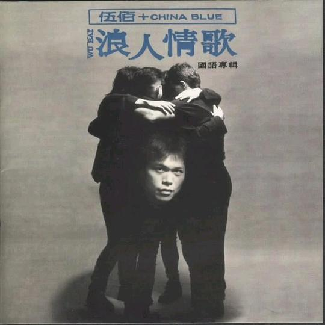
《牵挂》太抓耳，估计我唱不好。主打歌很好听，编曲很克制。《钢铁男子》的歌词教人落泪。《来不及》蛮轻松欢快的。《199玫瑰》的桥很好听，重章叠句式地推动情感。《继续堕落》的尾奏给我听爽了。我即将成为浪人踏上新的冒险了。
2025-09-22 12:08:13
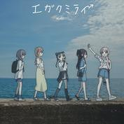
旋律不出色。
2025-09-21 23:06:25
 看过 邓南遮占领阜姆自由邦 / Fiume o morte! ★★★★☆
看过 邓南遮占领阜姆自由邦 / Fiume o morte! ★★★★☆
扮演邓南遮穿帮的笑场，进阜姆时乐队的演奏，无不试图将观众从历史叙事中间离出来，告诉他们这只是演员的日常并非过去的灾难。拍摄很有创意，但困在了平铺直叙中，缺少对法西斯一定的批判。
2025-09-21 19:35:30
想看 顺流逆流 / 順流逆流
伍佰与徐克。
2025-09-21 17:57:39
在听 TVアニメ「ワンダーエッグ・プライオリティ」オリジナル・サウンドトラック Vol. 2 ★★★★☆
喜欢第二十四《new world》，电子乐的鼓点真动听。
2025-09-21 17:46:04
看过 酷爱电影的庞波小姐 / 映画大好きポンポさん ★★★★☆
真是一封真挚的给电影的情书呀。判断一部电影好坏的出发视角居然是制片人么，不过的确忙前忙后最多的是制片人了。剪辑时的与素材结合的平行蒙太奇效果很棒，作画上也有很多高技术力的亮点，就是银行会议里说服的那一段太单薄了站不住脚。最后居然有动画内制作公司的彩蛋。
2025-09-20 18:21:36
看过 731 ★★☆☆☆
对此题材来说过于商业化了，似乎想诞生什么情愫，但什么也没出来。但实话实说，虽然造型太过干净，摄影却蛮好的。
2025-09-19 22:36:46
看过 青春猪头少年不会梦到红书包女孩 / 青春ブタ野郎はランドセルガールの夢を見ない ★★★☆☆
知道是想说明母亲的不容易，可最后哭泣的时候父亲该怎么办。麻衣桑真是温柔呀，师傅依旧言辞犀利。作画上有时会迷之三渲二，只能可圈可点。
2025-09-19 10:48:20
 读过 喬瑟與虎與魚群 下 ★★★☆☆
读过 喬瑟與虎與魚群 下 ★★★☆☆
车祸莫名其妙，结尾还是太过童话了。
2025-09-17 18:00:30
 看过 小行星城 / Asteroid City ★★★☆☆
看过 小行星城 / Asteroid City ★★★☆☆
主要问题是形式大于内容，太空洞，整个画面除了色调鲜艳和构图平衡外毫无故事性可言。但戏中戏与画幅的变化依旧绑定剧情，在那个公共澡堂的地方使用了莫名其妙的间离手法，“突转-发现”使用得也很生硬，看得出来韦斯是想拍出一部戏剧与之外创作的电影，可是太无聊。亮点在原来关门之后说再见会让悲伤的氛围延宕下去。同时最后类歌队的吟诵“you can’t wake up if you don’t fall asleep”直至谢幕，场景与第一幕相同还蛮有意思的。开头介绍小城的环绕长镜头很好玩。
2025-09-16 20:11:34
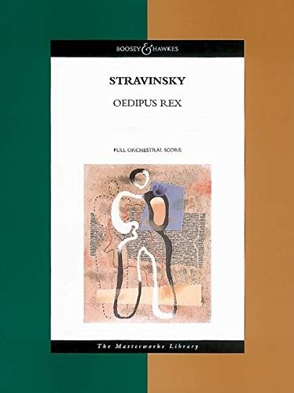
老师放的是小泽征尔指挥的版本，里面的道具与布景充满了符号化的意味。这个歌剧也太悲凉了。
2025-09-15 22:58:13
 玩过 喵斯快跑 Muse Dash ★★★★☆
玩过 喵斯快跑 Muse Dash ★★★★☆
不好评价的打击判定。
2025-09-15 22:50:03
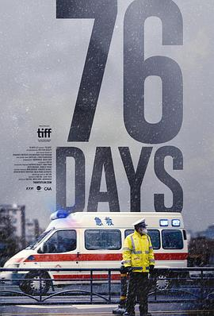
比较客观地记录了方方面面。哽咽是我最不能接受的悲伤，那会让我落泪的。
2025-09-14 23:43:19
看过 僵尸 / 殭屍 ★★★★☆
用完美自洽的概念来营造的可怖氛围着实吓到了我。尤其转盘时“土”的攻击让我眼前一亮。到底是借僵尸讲人性，里面满是落寞的痕迹。
2025-09-14 17:33:30
看过 我在颐和园等你 ★★★☆☆
2025-09-14 13:44:45
看过 火红的青春 ★★★★☆
十分红处竟成灰，被抛弃的理想还能被关注么。艺术风格比较独特。
2025-09-14 10:54:09
 想读 承诺
想读 承诺
2025-09-13 23:13:52
看过 同甘共苦 / Together ★★★★☆
这也太惊悚了，影像给了感官新的体验。所谓的“合体”究竟是指感情上的手足同心的具象化么。我还能想象没有另一半的生活么。
2025-09-12 23:28:53
听过 TVアニメ「ワンダーエッグ・プライオリティ」オリジナル・サウンドトラック Vol. 2 ★★★★☆
喜欢第二十四《new world》，电子乐的鼓点真动听。
2025-09-12 23:08:49
看过 想哭的我戴上了猫的面具 / 泣きたい私は猫をかぶる ★★★☆☆
女主做任何事包括喜欢的动机都不明朗，说到底她到底有多少个名字哦。结尾居然诞生了一个败犬，拿不拿的歌真好听，但剧情真是烂得一塌糊涂呀。
2025-09-10 22:21:14
 读过 喬瑟與虎與魚群 上 ★★★★☆
读过 喬瑟與虎與魚群 上 ★★★★☆
与动画别无二致，除了电车上乔西关心的是热气球而不是飞机。落花与葬礼的转场很好，有些地方画得稍微有点崩坏。
2025-09-10 17:11:09
 看过 死神来了5 / Final Destination 5 ★★★☆☆
看过 死神来了5 / Final Destination 5 ★★★☆☆
没想到还是个前传，只是文戏太差了。
2025-09-10 15:25:35
 看过 死神来了4 / The Final Destination ★★★☆☆
看过 死神来了4 / The Final Destination ★★★☆☆
太套路了这部，况且死亡方式有了预告并毫无新意，最后甚至用一段动画取代。明明嘴上说着安全却横穿马路，好戏谑。
2025-09-09 23:37:39
 看过 Jose与虎与鱼们 / ジョゼと虎と魚たち ★★★★☆
看过 Jose与虎与鱼们 / ジョゼと虎と魚たち ★★★★☆
实话说我才开始读田边老师的短篇集，所以这部电影的原作我仍然不知全貌。但电影与动画的改编太大了，这里也太现实了，就连Jose想去看本续集都要等别人扔出去而非同动画里一样可以去图书馆里借阅。真不敢想象一个故事拍出了两种味道。
2025-09-08 11:39:24
在听 浪人情歌 ★★★★★
《牵挂》太抓耳，估计我唱不好。主打歌很好听。
2025-09-08 11:38:03
 读过 化物語 上 ★★★★☆
读过 化物語 上 ★★★★☆
物语故事最重要的开场。
2025-09-08 11:36:34
在玩 菲拉 Phira ★★★★☆
社区的谱子有好多高质量的。
2025-09-08 11:35:28
 玩过 双人成行 It Takes Two ★★★★★
玩过 双人成行 It Takes Two ★★★★★
和加多宝玩的第一款游戏，虽然从下载steam再到注册账号花了不好时间，但最后还是连麦玩上。很多操作都需要两个人一起才能实现，非常有巧思。最后去年暑假里和王九打通关了。
2025-09-08 11:34:05
 读过 進擊の巨人 34 ★★★★☆
读过 進擊の巨人 34 ★★★★☆
当时请假在家追完了漫画，实话说关于那棵树的意象从故事开端能一直圆到合理的结局是很厉害的创作能力了。谏山创对那个世界建构再解构，只不过结尾不符合完美主义罢了。
2025-09-08 11:29:32
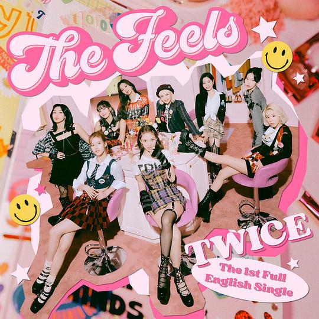
资料库里唯一首k-pop。
2025-09-08 11:26:30
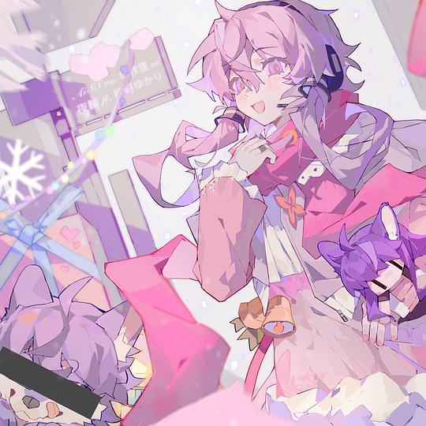
full ver.里圣诞曲的变调融合得恰到好处。
2025-09-08 11:24:12
 听过 恋爱困难少女 ★★★★☆
听过 恋爱困难少女 ★★★★☆
对苏轼词句的化用教人拍案叫绝。
2025-09-08 08:49:08
关注片单 Burberry光影英伦主题片单
2025-09-07 23:55:37
 看过 我失去了身体 / J’ai perdu mon corps ★★★★☆
看过 我失去了身体 / J’ai perdu mon corps ★★★★☆
一整部太艺术了，到头来就讲明白了一件事：“人生不如意十有八九”。一开始在画面上就喜欢藏了一手，与断手回家的经历构成平行蒙太奇叙事。男孩比我勇敢，他甚至能主动去找女孩。画手走路要对手的结构该有多了解呀。音乐很入画。
2025-09-03 22:53:57
在读 喬瑟與虎與魚群 ★★★★☆
有点像报刊上爱情小说的文风。
2025-09-03 21:36:10
 看过 死神来了3 / Final Destination 3 ★★★☆☆
看过 死神来了3 / Final Destination 3 ★★★☆☆
故事开始老套了起来，除了日光浴，结尾与死法都别无新意
2025-09-03 19:37:34
在读 喬瑟與虎與魚群 上 ★★★★☆
与动画别无二致，除了电车上乔西关心的是热气球而不是飞机。
2025-09-03 18:40:42
 看过 生化危机5：惩罚 / Resident Evil: Retribution ★★★☆☆
看过 生化危机5：惩罚 / Resident Evil: Retribution ★★★☆☆
和老爸一起看的。看过不止两遍。
2025-09-03 17:54:15
 看过 怪兽大学 / Monsters University ★★★★☆
看过 怪兽大学 / Monsters University ★★★★☆
在金鹰卡通看的。
2025-09-03 17:32:18
 看过 死神来了2 / Final Destination 2 ★★★★☆
看过 死神来了2 / Final Destination 2 ★★★★☆
血腥镜头变多了，死神似乎毫不留情。死神随风来的设定真吓人。
2025-09-03 14:40:09
 看过 死神来了 / Final Destination ★★★★☆
看过 死神来了 / Final Destination ★★★★☆
作为首部来说很有巧思，死法上偶有创意，只是最后结局圆不下去了。
2025-09-02 22:48:47
 看过 乔西的虎与鱼 / ジョゼと虎と魚たち ★★★★☆
看过 乔西的虎与鱼 / ジョゼと虎と魚たち ★★★★☆
就算剧情上有很多的槽点，但并不妨碍我喜欢或者说中意这个故事。不明白为何要给很幸福的男主安排个车祸使其实际感受乔西的情绪，这样也太耍赖了吧。店里的后辈一开口就是输了。《小美人鱼》的童话讲得与故事很契合。
2025-09-02 16:01:52
 看过 垫底辣妹 / ビリギャル ★★★☆☆
看过 垫底辣妹 / ビリギャル ★★★☆☆
天才的逆袭果然对普通人来说励志不了一点。里面没有不讲理的坏人才是生活自怡的关键。
2025-09-02 13:17:35
收藏评论到豆列 理解 談開頭